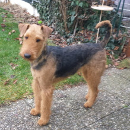

Der König der Terrier
Nicht ohne Grund wird der Airedale im Volksmund als König der Terrier "geadelt", gilt er doch als hochläufiger Terrier zu den größeren Unterarten bei dieser Rasse. Vor allem verdankt er diesen Beinamen seinem Wesen, das Terrier untypisch von Würde und Geduld geprägt ist. Ob als treuer, anhänglicher Familienhund oder als robuster und nervenstarker Arbeits- und Sporthund, er macht immer eine gute Figur. Mit bis zu 61 cm Widerristhöhe und dem kompakten, muskulösen Körperbau hebt er sich von anderen Terriern deutlich ab. Das harte, dichte, drahtige Haarkleid besteht aus straffem Deckhaar und kurzer, weicher Unterwolle. Ein schwarzer oder gräulicher Sattel ist rassetypisch wie auch die gleichfarbigen Partien am Nacken und an der Oberseite der Rute. Ansonsten ist der Airedale Terrier lohfarben.
Die Geschichte des Airedale ist entsprechend seinem Charakter sehr vielseitig. Zum einen hat er sich als Jäger (Suchhund, Fährtenhund), Retter (Schutzhund, Rettungshund, Melde- und Sanitätshund im Krieg) und Arbeiter (Wachdienst, Hütearbeit) bewährt. Zum anderen erlangte er im 19. Jarhundert eine Art Statussymbol, da er bei edlen Damen als Begeleithund sehr begehrt war. Diese Anpassungsfähigkeit und Belastbarkeit machen den Airedale unnachahmlich. Als Familienhund kann er zudem mit einigen Alleinstellungsmerkmalen punkten. Er verliert wie der Pudel keine Haare und wenn er regelmäßig gekämmt und getrimmt wird, entwickelt er im Gegensatz zu anderen Rassen im Sommer und im nassen Zustand nicht den typischen Hundegeruch.